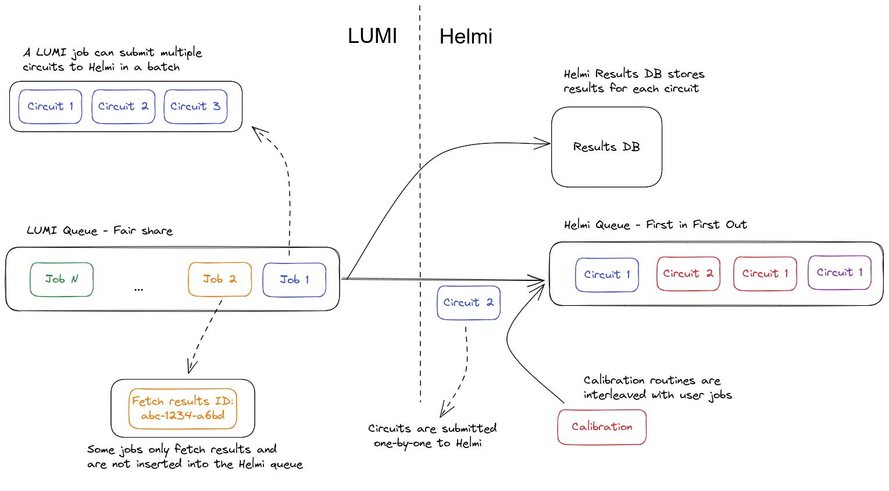
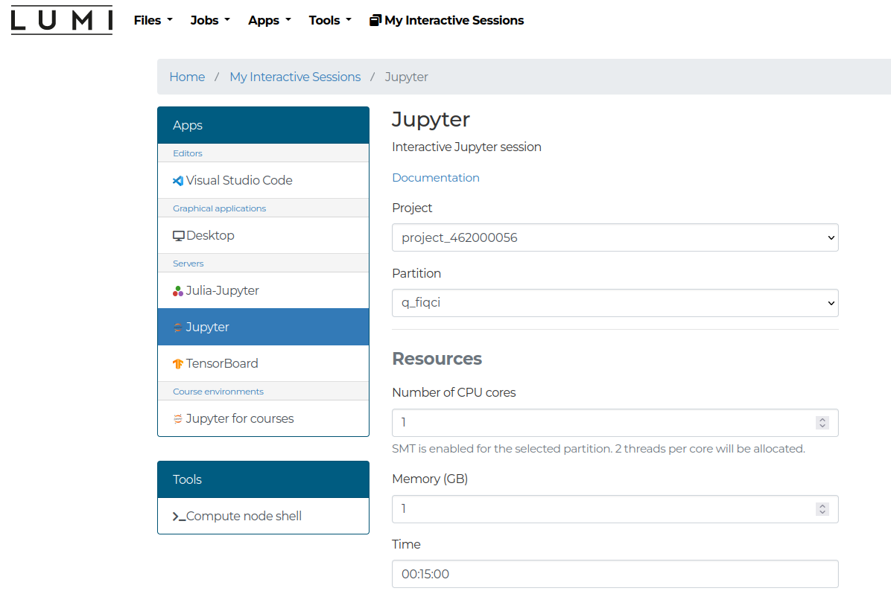
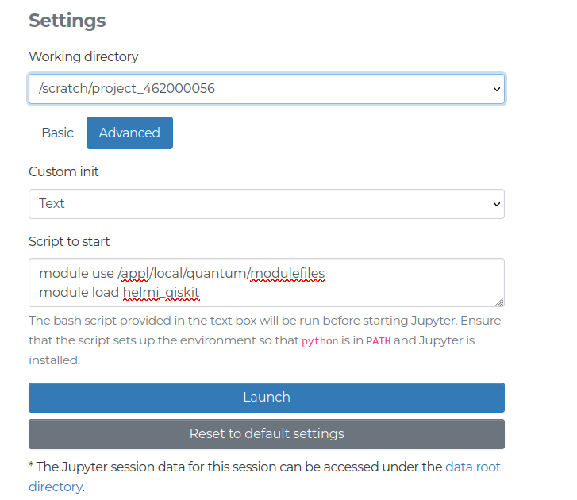

Running on Helmi
To run interactive jobs on LUMI the srun command can be used
The command takes a number of arguments
--account: Unix group string which can be found in your MyCSC project.-t: Sets a limit on total run time of job allocation. Upper bound is 15 minutes.-c: Requests that \(n\) CPUs be allocated per process.-n: Number of tasks to run in parallel. If greater than 1, a job may be assigned to multiple nodes.--partition: The partition to run on. Should beq_industry.cmd: The command to run. In this casepython qiskit_flip.py
Note, that the srun command is blocking, which means that you'll have to wait until your program terminates before srun returns and you can enter your next command. Alternatively you can also load a shell on the compute node to provide more flexibility. This can be done with the following command:
This command loads a bash shell on the compute node with access to Helmi. After getting the shell, you may need to load your modules again.
Note
The LUMI Web-interface is now available at www.lumi.csc.fi. You can run jupyter-notebooks through this web interface. See the section below for further details.
To run longer experiments, it is advisable to use sbatch which executes batch jobs on LUMI.
#!/bin/bash
#SBATCH --job-name=helmijob # Job name
#SBATCH --account=project_<id> # Project for billing
#SBATCH --partition=q_industry # Partition (queue) name
#SBATCH --ntasks=1 # One task (process)
#SBATCH --cpus-per-task=1 # Number of cores (threads)
#SBATCH --time=00:15:00 # Run time (hh:mm:ss)
module use /appl/local/quantum/modulefiles
# uncomment correct line:
# module load helmi_qiskit
# or
# module load helmi_cirq
python your_python_script.py
Job queues
Running on Helmi through LUMI involves using two queues. The first one is the SLURM queue on LUMI. Users interact with SLURM using the srun or sbatch commands for job submission and can fetch details about the queue state using squeue -p <partition>. The state of the partition can be viewed with sinfo -p <partition>.
Jobs on LUMI have the following limitations
- Maximum duration for any job is 15 minutes
- Maximum of 32 cores
After your job is accepted by LUMI, it will be allocated to a node within the q_industry partition. At present, the nid002153 node is available for use, which is equipped with 128 CPU cores and 256 GiB of memory.
Note
For additional information:
- To check the
q_industrypartition's current limits and the list of nodes, usesinfo -s q_industry. - To obtain information about the node
nid002153, usescontrol show node "nid002153".
The second queue is Helmi's internal job queue. It consists of a simple first-in-first-out (FIFO) queue. Each job from LUMI that executes a quantum circuit on Helmi will be inserted into this queue. It's important to note that operations that retrieve data, such as shot results or calibration data, do not enter this queue. Furthermore, periodic calibration jobs, submitted from VTT's side, are interleaved with regular user jobs in Helmi's queue (see Calibration) as depicted in the picture below.

Web-interface
The LUMI Web interface allows users to run on Helmi through their browser and use Jupyter notebooks for execution. Here is a brief guide, specifically for Helmi, however further details can be found here.
Once you have logged in select the Jupyter option. The session should be configured by selecting your project and the partition. The partitions should be q_fiqci and q_industry for use with Helmi. The resource limitations are described here. For use with Helmi some custom advanced settings should be configured.
This pictures below demonstrate the process.

